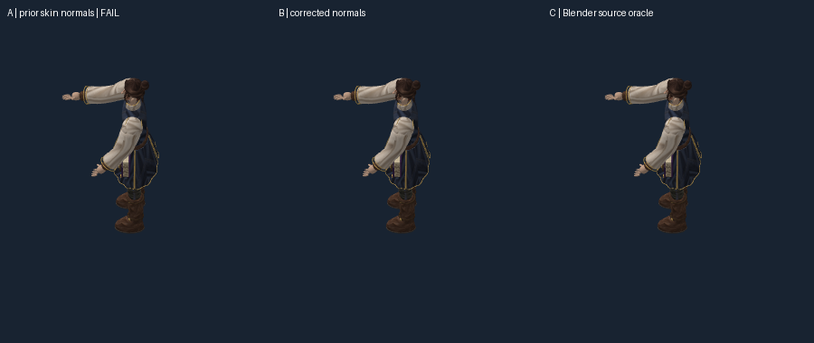
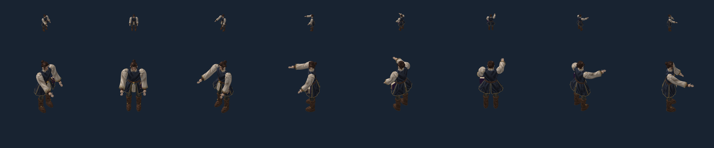

1,296/1,296 rendered comparisons PASS. Godot shipping target; Pixi test harness. The six old cast failures came from blended rest normals differing from Blender’s recalculated surface normals. Geometry, paintings, UVs, rig and corrected motion remain unchanged. This fixes a representation error; it does not approve full lighting, cloth animation, turns or the production character.
A uses the old skin normals and fails. B adds sparse source-normal corrections. C renders independently evaluated Blender positions and normals. The difference is subtle; unchanged numerical thresholds determine agreement.

Normal-only source override passes all48cast probe comparisons (eight views, two scales, three backgrounds). Position-only override retains the same six failures. Turning off normal corrections after the repair reproduces the original2.1984%error-fraction failure. Attachment-shift and wrong-pose controls also fail as intended.
0°,45°,90°,135°,180°,225°,270°,315° left to right. Top50px body axis; lower150px. Native2400×500geometry render with horizontal scroll. Approximately two1.2-second cycles; encoded endpoints may omit a fraction of a frame. A separate216-frame audit covers all existing idle/walk/cast frames. Production frame rate is not established here.
Engine-neutral records store vertex index and corrected world normal per frame, tied to the exact rest-mesh and palette hashes. The pilot’s216frames add16,736,368bytes (about15.96MiB) of correction data. The current adapter updates a1,021,824-byte attribute buffer per displayed pose; bandwidth and storage require later scale tests. This pilot-specific correction is not yet a production-size policy or a Godot importer.

Report · Receipt / limits · Neutral asset manifest · Causal control · All comparisons and negative controls · Preserved old failures · Corrected walk evidence · Live Pixi controls (local HTTP required)